Code
library(tidyverse)
library(mlr3proba)
library(DT)
library(ggpubr)We benchmark the two versions of the survival brier score (Graf et al. 1999), namely the Integrated Survival Brier Score (ISBS) and the proposed we-weighted version (RISBS) (see documentation details for their respective formulas). The first (ISBS) is not a proper scoring rule (Rindt et al. 2022), the second (RISBS) is (Sonabend 2022). Our goal is to assess whether these scores exhibit differences in simulated and real-world datasets, and if so, to understand the reasons behind these differences.
Load libraries:
library(tidyverse)
library(mlr3proba)
library(DT)
library(ggpubr)We simulate datasets with varying characteristics:
The ‘fixed’ parameters in our simulations are the following:
mlr3 tasks and extract useful info, namely:
n_obs: Number of observationsn_vars: Number of total variablesn_factors: Number of factor/categorical variablesn_numeric: Number of numeric variablescens_prop: Proportion of censoringadmin_cens_prop: Proportion of censored observations that are censored administratively, i.e. at the last censoring timedep_cens_prop: Proportion of significant coefficients (adjusted p < 0.05) to predict censoring status using a logistic regression modelprop_haz: If the dataset satisfies the proportional hazards assumption (p > 0.05 using a global Schoenfeld test)We used a total of 26 real-word, low-dimensional datasets (fewer features than observations) for benchmarking, some of which are freely available via various R packages. For each dataset, we performed a simple train/test resampling (80%/20%) 100 times.
We trained 3 models in each respective train set, namely the Kaplan-Meier, the Cox Proportional Hazards (CoxPH) model and an Accelerated Failure Time (AFT) model with Weibull distribution for the time-to-event output variable. We tested the performance of each model in each respective test set using the ISBS and RISBS measures. We kept also the brier scores for each specific observation (per-observation scores) in all respective test sets.
# task info, see `prepare_tasks.R`
task_tbl = readRDS(file = "task_tbl.rds")
task_tbl |>
select(-task) |>
datatable(
rownames = FALSE,
options = list(pageLength = 13, searching = FALSE,
order = list(list(0, 'asc')))) |>
formatRound(columns = 6:8, digits = 2) |>
formatStyle(columns = 'prop_haz',
backgroundColor = styleEqual(c(TRUE, FALSE), c("#4DAF4A", "#E41A1C")))Get the benchmark results:
# see `run_bench.R`
bench_res = readRDS(file = "bench_res_tmax.rds")We calculate the Pearson correlation and root mean square error (RMSE) between RISBS and ISBS scores for each dataset (100 resamplings) and each model:
score_corrs =
bench_res |>
group_by(task_id) |>
select(ends_with("proper")) |>
summarize(
km_cor = cor(km_proper, km_improper),
cox_cor = cor(cox_proper, cox_improper),
aft_cor = cor(aft_proper, aft_improper),
km_rmse = sqrt(mean(km_proper - km_improper)^2),
cox_rmse = sqrt(mean(cox_proper - cox_improper)^2),
aft_rmse = sqrt(mean(aft_proper - aft_improper)^2),
) |>
rowwise() |>
mutate(
mean_cor = mean(c_across(ends_with("cor")), na.rm = TRUE),
mean_rmse = mean(c_across(ends_with("rmse")), na.rm = TRUE)
) |>
ungroup() |>
arrange(desc(mean_cor))
score_corrs |>
datatable(
rownames = FALSE,
options = list(pageLength = 13, searching = FALSE,
order = list(list(7, 'desc')))) |>
formatRound(columns = 2:9, digits = 3)Visually comparing RISBS and ISBS scores per dataset:
for (id in score_corrs$task_id) {
p =
bench_res |>
filter(task_id == id) |>
select(ends_with("proper")) |>
pivot_longer(cols = everything(), names_to = c("model", ".value"), names_pattern = "(.*)_(.*)") |>
mutate(model = factor(model, levels = c("km", "cox", "aft"))) |>
# scatter plot with Pearson's coef.
ggpubr::ggscatter(
x = "proper", y = "improper",
facet.by = c("model"),
panel.labs = list(model = c("Kaplan-Meier", "CoxPH", "AFT (Weibull)")),
xlab = "RISBS (proper)",
ylab = "ISBS (improper)",
color = "black", shape = 21, size = 2,
add = "reg.line", # Add regression line
add.params = list(color = "blue", fill = "lightgray"), # Customize regr. line
conf.int = TRUE, # Add confidence interval
cor.coef = TRUE, # Add Pearson's correlation coefficient
cor.coeff.args = list(method = "pearson", label.sep = "\n")
) +
labs(title = id) +
theme(panel.spacing = unit(1, "cm"))
print(p)
}


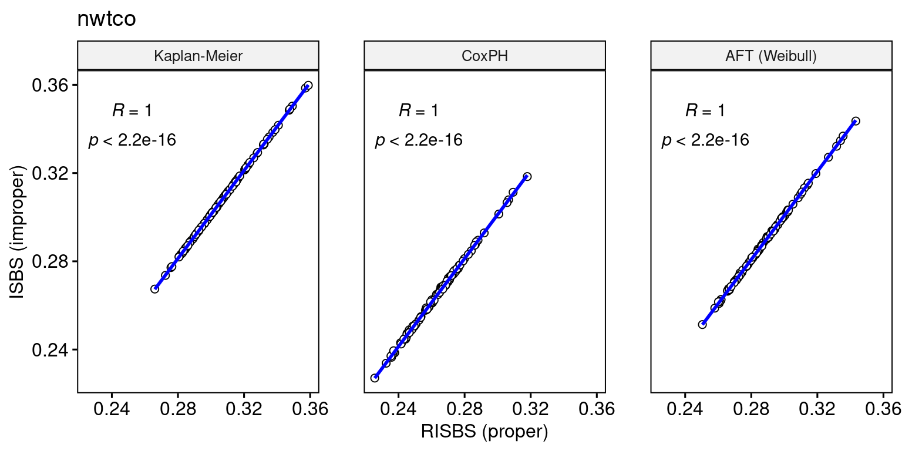


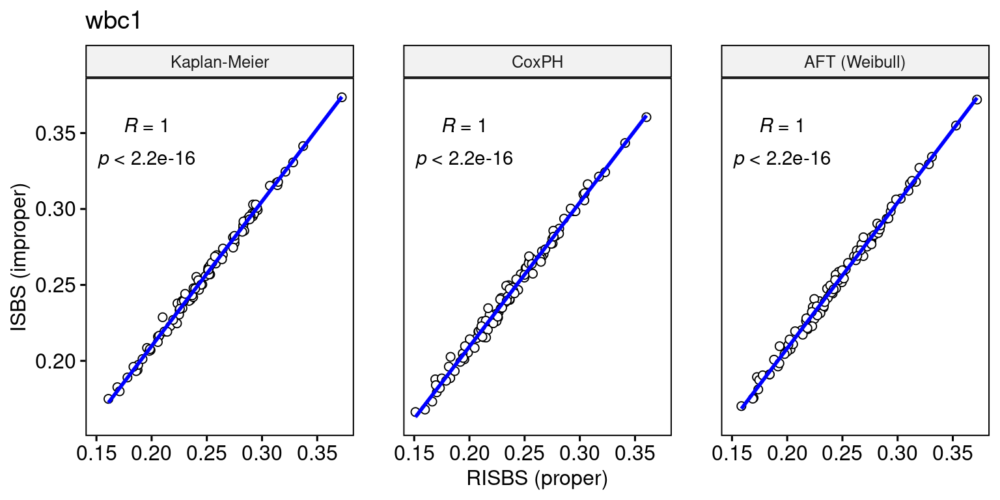

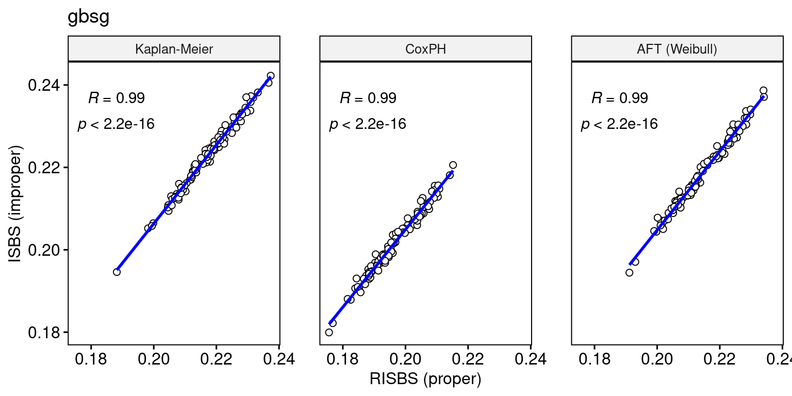


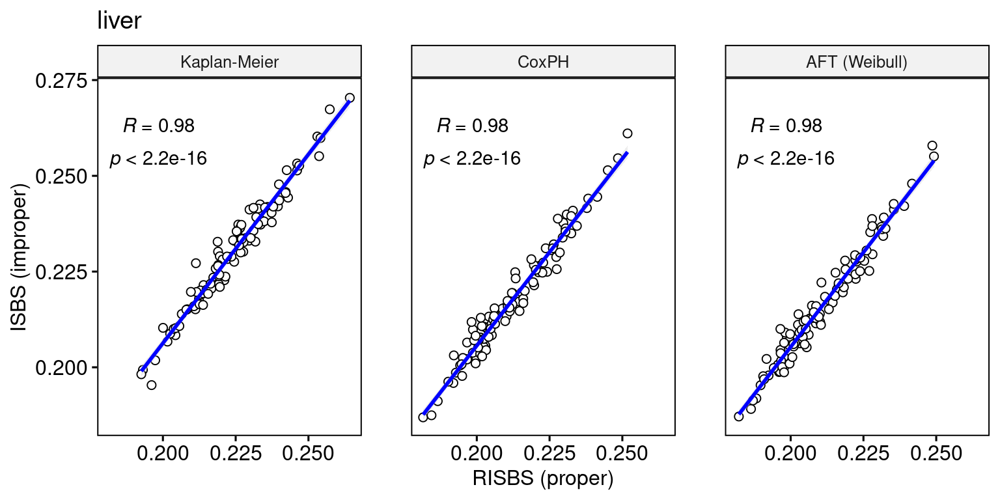
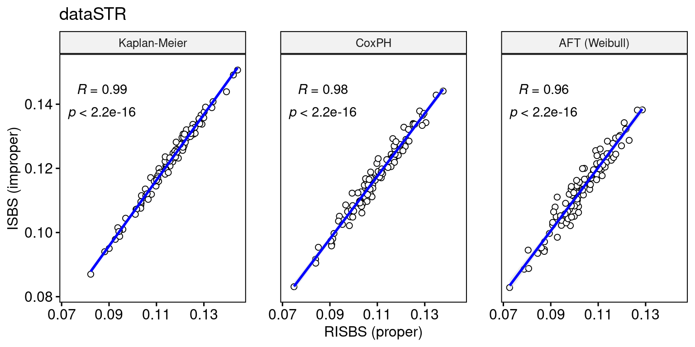


Visually comparing RISBS and ISBS per-observation scores per dataset (TO COLOR BY CENSORING STATUS):
for (id in score_corrs$task_id) {
p =
bench_res |>
filter(task_id == id) |>
select(ends_with("scores")) |> # add censored column for coloring
unnest(cols = everything()) |>
pivot_longer(cols = everything(), names_to = c("model", "type", ".value"), names_pattern = "(.*)_(.*)_(.*)") |>
pivot_wider(names_from = type, values_from = scores, values_fn = list) |>
unnest(cols = everything()) |>
mutate(model = factor(model, levels = c("km", "cox", "aft"))) |>
# scatter plot with Pearson's coef.
ggpubr::ggscatter(
x = "proper", y = "improper",
facet.by = c("model"),
panel.labs = list(model = c("Kaplan-Meier", "CoxPH", "AFT (Weibull)")),
xlab = "RISBS (proper)",
ylab = "ISBS (improper)",
color = "black", shape = 21, size = 2,
add = "reg.line", # Add regression line
add.params = list(color = "blue", fill = "lightgray"), # Customize regr. line
conf.int = TRUE, # Add confidence interval
cor.coef = TRUE, # Add Pearson's correlation coefficient
cor.coeff.args = list(method = "pearson", label.sep = "\n")
) +
labs(title = id) +
theme(panel.spacing = unit(1, "cm"))
print(p)
}
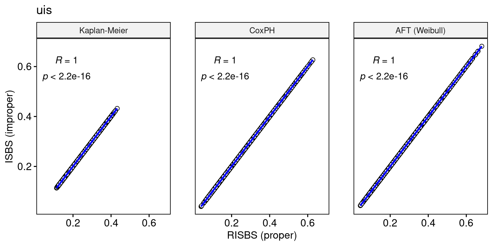
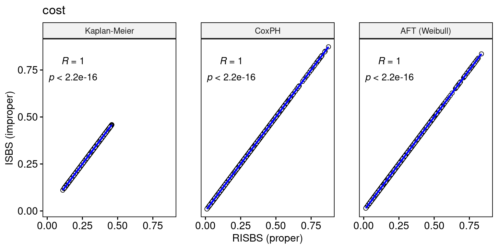
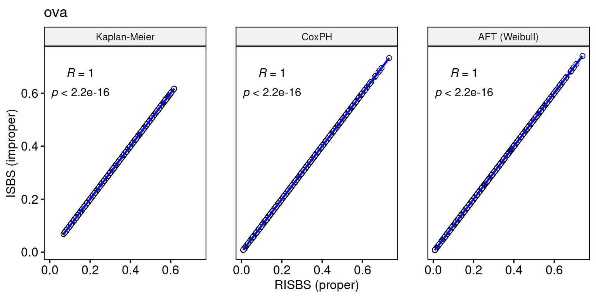

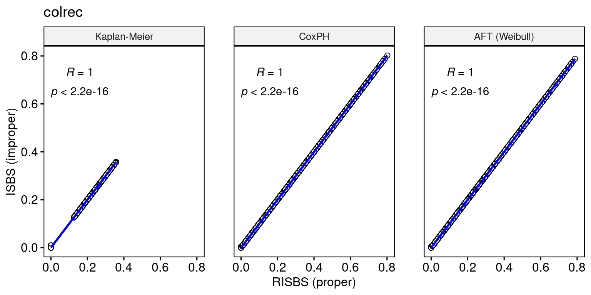


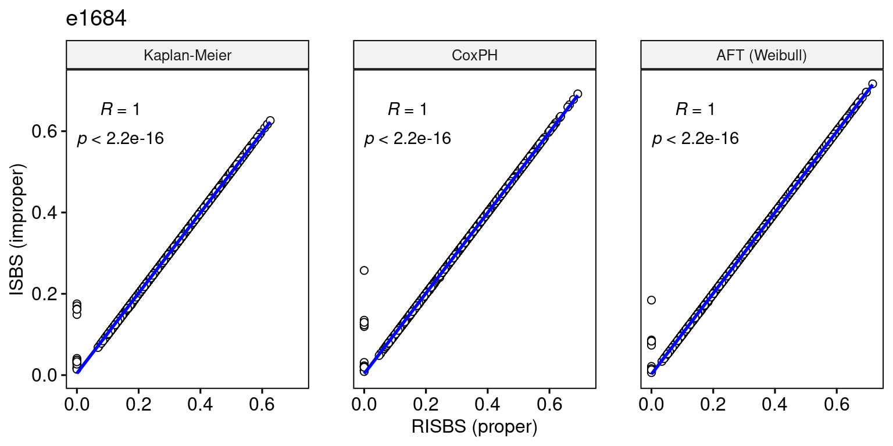


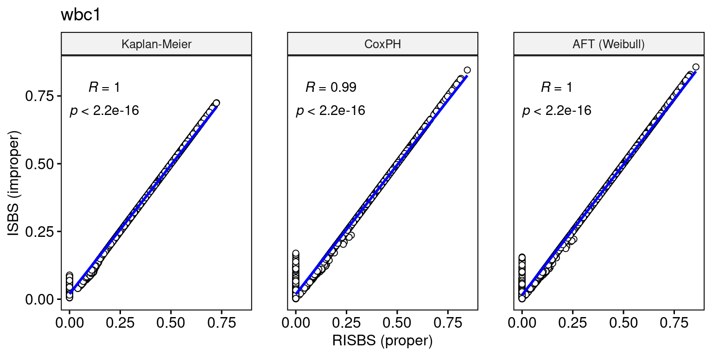
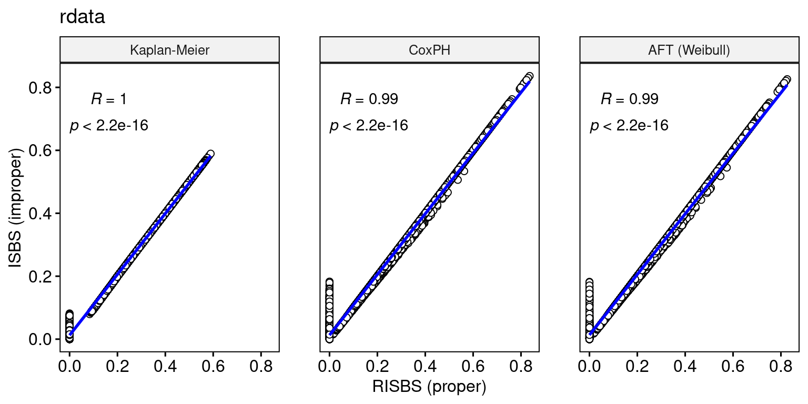

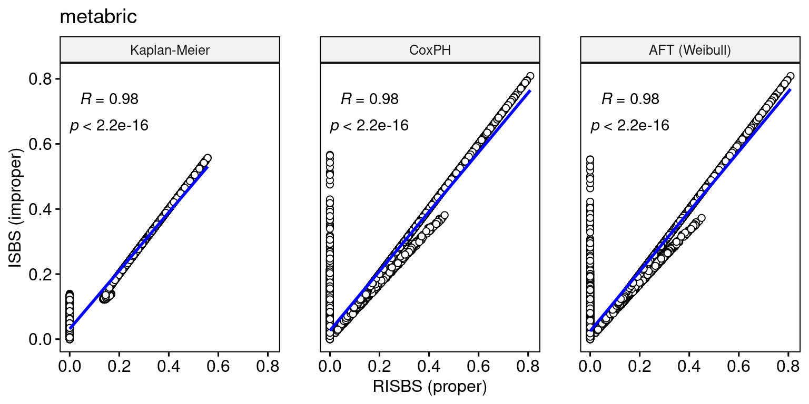

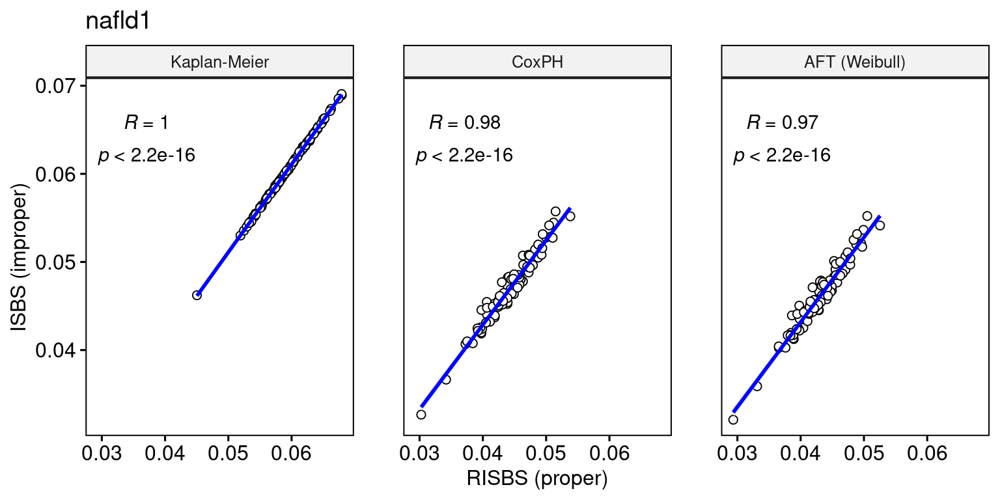
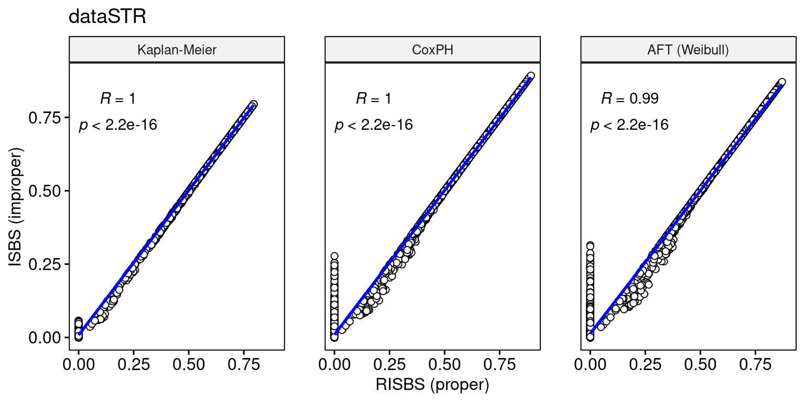
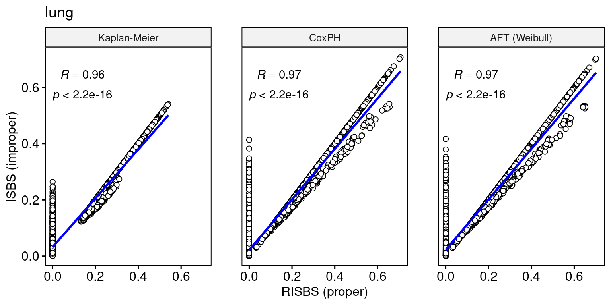
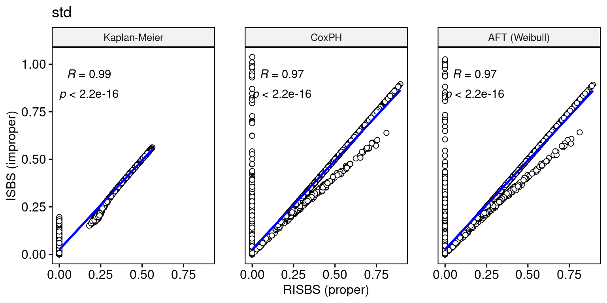

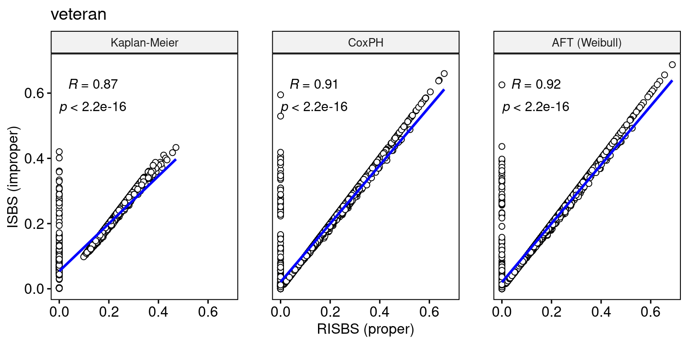
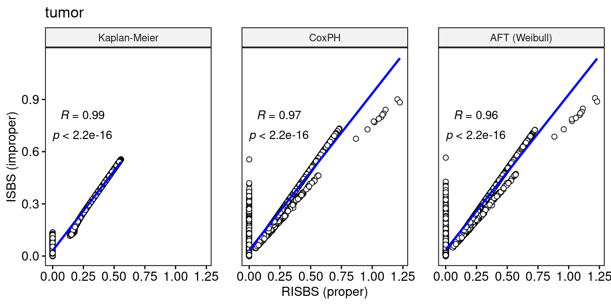
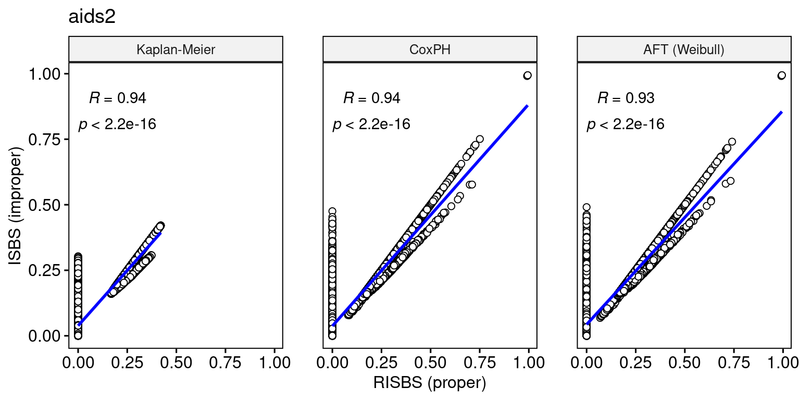
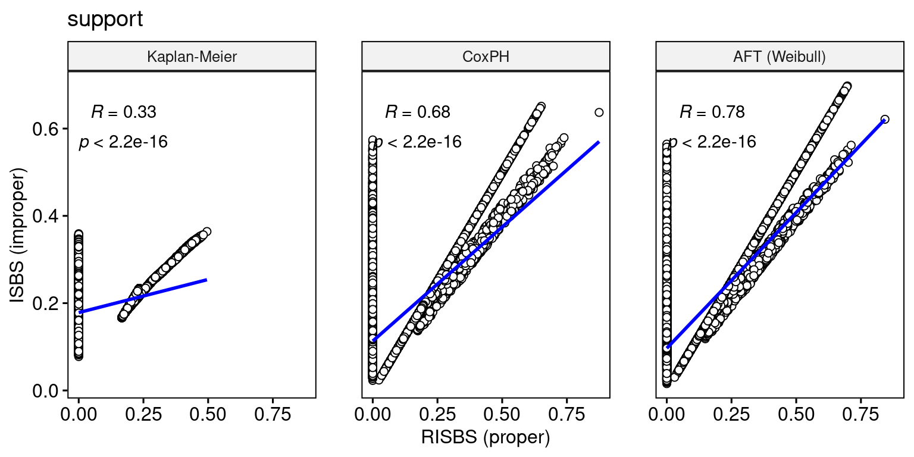
In this section we investigate an example where the proper ISBS gets inflated (i.e. too large value for the score, compared to the improper version) and show how we can avoid such a thing from happening when evaluating model performance.
Let’s use a dataset where in a particular train/test resampling the issue occurs:
inflated_data = readRDS(file = "inflated_data.rds")
task = inflated_data$task
part = inflated_data$part
task<TaskSurv:mgus> (176 x 9)
* Target: time, status
* Properties: -
* Features (7):
- dbl (6): age, alb, creat, dxyr, hgb, mspike
- fct (1): sexSeparate train and test data:
task_train = task$clone()$filter(rows = part$train)
task_test = task$clone()$filter(rows = part$test)Kaplan-Meier of the training survival data:
autoplot(task_train) +
labs(title = "Kaplan-Meier (train data)",
subtitle = "Time-to-event distribution")
Kaplan-Meier of the training censoring data:
autoplot(task_train, reverse = TRUE) +
labs(title = "Kaplan-Meier (train data)",
subtitle = "Censoring distribution")
Estimates of the censoring distribution G_{KM}(t) (values from the above figure):
km_train = task_train$kaplan(reverse = TRUE)
km_tbl = tibble(time = km_train$time, surv = km_train$surv)
tail(km_tbl)# A tibble: 6 × 2
time surv
<dbl> <dbl>
1 12140 0.75
2 12313 0.625
3 12319 0.5
4 12349 0.25
5 12689 0.125
6 13019 0 As we can see from the above figures and table, due to having at least one censored observation at the last time point, G_{KM}(t_{max}) = 0 for t_{max} = 13019.
Is there an observation on the test set that has died (status = 1) on that last time point (or after)?
max_time = max(km_tbl$time) # max time point
test_times = task_test$times()
test_status = task_test$status()
# get the id of the observation in the test data
id = which(test_times >= max_time & test_status == 1)
id[1] 14Yes there is such observation!
In mlr3proba using proper = TRUE for the RISBS calculation, this observation will be weighted by 1/0 according to the formula. Practically, to avoid division by zero, a small value eps = 0.001 will be used.
Let’s train a simple Cox model on the train set and calculate its predictions on the test set:
cox = lrn("surv.coxph")
p = cox$train(task, part$train)$predict(task, part$test)We calculate the ISBS (improper) and RISBS (proper) scores:
graf_improper = msr("surv.graf", proper = FALSE, id = "graf.improper")
graf_proper = msr("surv.graf", proper = TRUE, id = "graf.proper")
p$score(graf_improper, task = task, train_set = part$train)graf.improper
0.1493429 p$score(graf_proper , task = task, train_set = part$train)graf.proper
10.64584 As we can see there is huge difference between the two versions of the score. We check the per-observation scores (integrated across all time points):
Observation-wise RISBS scores:
graf_proper$scores [1] 0.08994417 0.02854219 0.04214266 0.15578719 0.05364692
[6] 0.12969150 0.06463256 0.32033549 2.43262450 0.11602432
[11] 0.03228501 0.10172088 0.14652850 367.10227335 0.18004727
[16] 0.21991511 0.09070024 0.03507389 0.19856844 0.07925747
[21] 0.07732517 0.06982001 0.19468406 0.05267402 0.02419841
[26] 0.17645640 0.07633691 0.04379196 0.07839955 0.06684222
[31] 0.05457688 0.02874430 0.04071108 0.00000000 0.00000000Observation-wise ISBS scores:
graf_improper$scores [1] 0.08994417 0.02854219 0.04214266 0.15578719 0.05364692 0.12969150
[7] 0.06463256 0.32033549 0.62971109 0.11602432 0.03228501 0.10172088
[13] 0.14652850 1.07969258 0.16743979 0.21991511 0.09070024 0.03507389
[19] 0.19856844 0.07925747 0.07732517 0.06982001 0.19468406 0.05267402
[25] 0.02419841 0.16199516 0.07633691 0.04379196 0.07839955 0.06684222
[31] 0.05457688 0.02874430 0.04071108 0.03512466 0.46541333It is the one observation that we identified earlier that causes the inflation of the RISBS score - it’s pretty much an outlier compared to all other values:
graf_proper$scores[id][1] 367.1023By setting t_max (time horizon to evaluate the measure up to) to the 95\% quantile of the event times, we can solve the inflation problem of the proper RISBS score, since we will divide by a value larger than zero from the above table of G_{KM}(t) values. The t_max time point is:
t_max = as.integer(quantile(task_train$unique_event_times(), 0.95))
t_max[1] 10080Integrating up to t_max, the proper RISBS score is:
graf_proper_tmax = msr("surv.graf", proper = TRUE, t_max = t_max)
p$score(graf_proper_tmax, task = task, train_set = part$train) # ISBSsurv.graf
0.1436484 The score for the specific observation that had experienced the event at (or beyond) the latest training time point is now:
graf_proper_tmax$scores[id][1] 0.141502To avoid the inflation of RISBS and generally have a more robust estimation of both RISBS and ISBS scoring rules, we advise to set the t_max argument (time horizon). This can be either study-driven or based on a meaningful quantile of the distribution of (usually event) times in your dataset (e.g. 80\%).